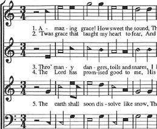

Anybody is welcome to walk in, find a seat, and try singing. You will be gently encouraged to participate, regardless of whether you think you are a good singer. If you prefer, you can just listen. There is no boundary between listeners and singers. The atmosphere will be relaxed. There will be plenty of food, so stay for dinner. While some shape note books include old-fashioned gospel hymns, the music in the most widely used book, the 1991 Sacred Harp, has an unfamiliar older sound.
Your religious or political affiliation doesn't matter at a singing. Sacred Harp singing has been interdenominational since it began. Anyone is welcome who can enjoy these tunes and their 18th and 19th century lyrics: "And let this feeble body fail, And let it faint or die; My soul shall quit this mournful vale, And soar to worlds on high."
The basics of shape note singing are covered in an excellent handout for beginners (PDF) by Lisa Grayson. Rather than repeat them, we'll look at an example of shape note music. Here is part of "Amazing Grace" as it appears in The Sacred Harp (1991 Edition), used by permission of the Sacred Harp Publishing Company.
 The note heads are shaped according to their position on the scale: fa, sol, la, and mi. It is customary to sing the shapes before singing the words of the song. In this example, the shapes for the top part would be sung "fa-la la-sol sol-la la-sol...." The Sacred Harp uses just these four shapes. In the late 19th century some publishers introduced 7-shape notation to represent the familiar do-re-mi-fa-sol-la-ti-do system.
Each of the four voice parts - treble, alto, tenor, and bass - is printed on a different line. The verses are printed wherever they fit. The melody is on the third line, which is sung by the tenors. Though this melody is familiar, the harmony sounds very different from the version used in modern church hymnals. With the exception of the alto part, which was added later, the arrangement in The Sacred Harp is the original version of our "Amazing Grace," from William Walker's 1835 shape note book Southern Harmony.
The title printed above the song is not "Amazing Grace" but "New Britain". In shape note hymnals, the song is headed by the name of the tune, which often has nothing to do with the words. Nobody knows why this one was called "New Britain," but many other tunes bear the names of places, from "Big Creek" to "Africa."
You can get an idea of the style from this song "Montgomery", recorded in Georgia in 2011. However, YouTube videos can only hint at the sound you experience at a singing. The best place to hear Sacred Harp is in the middle of the square of singers, preferably in a room with the acoustics of a wood-panelled country church.
To plunge right in and to hear the most spirited sound, go to an all-day singing. It is OK to come late or leave early. Just come. None of the following are required for participation, especially when you're new, but people typically bring the following to Georgia singings:
Lisa Grayson's brief beginners' sheet (PDF) explains where to find the section for your voice part. Wherever you sit, do not sit shyly in the back by yourself. Sit next to an experienced singer so you can follow along. No one will mind when you make mistakes. Lisa also has written an excellent 18-page guide for beginners.
For a little instruction, try a singing school or a local group. A singing school is a class which covers the rudiments of shape note singing. Singing schools will be mentioned on the upcoming singings page. The ultimate singing school is Camp Fasola, held in Alabama in June or July. To learn to sing from 7-shape books, don't miss Camp Doremi, held in North Carolina in August.
The first singing I went to, the Georgia State Convention, was intense, overwhelming, and a bit bewildering. I went out of curiosity and stayed for about half an hour. I wasn't used to listening to this kind of music, let alone singing it. But I was intrigued. Learning some of the skills has been a slow process for me, but it has been well worth it. As another new singer said to me, "I don't have to wait until I leave this body to get to Canaan -- I ALREADY AM in Canaan when I'm at a singing!"
Written by Debora Grosse, who has been singing since 2001. Last updated June 13, 2022.
Additions, corrections, comments, or questions? Send us an email